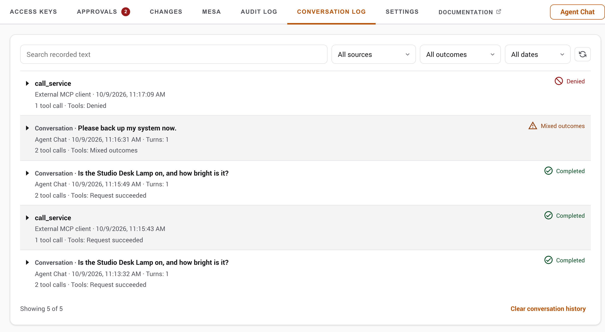
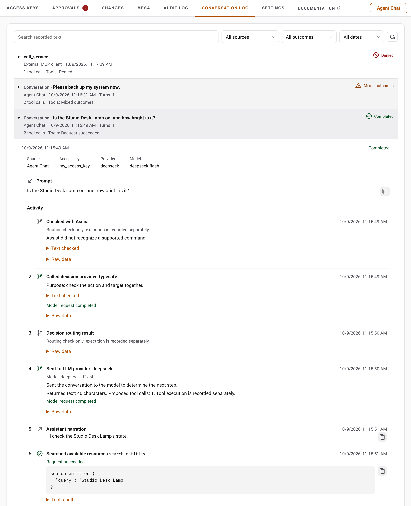
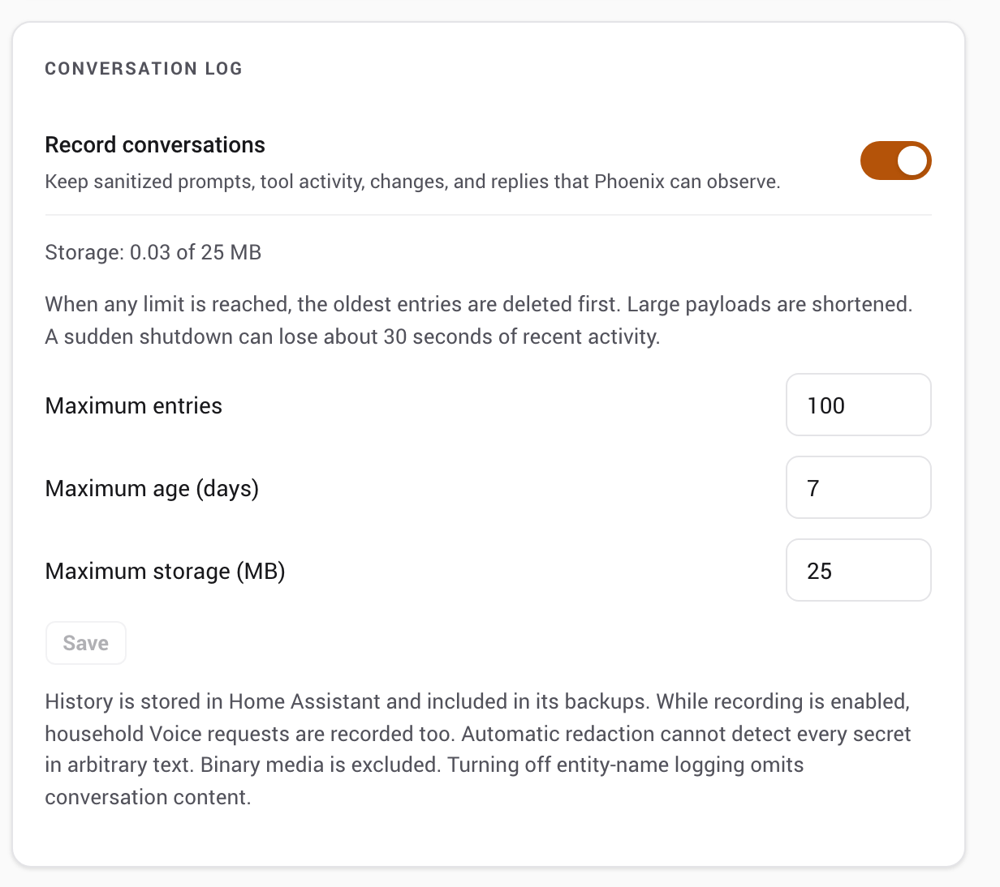
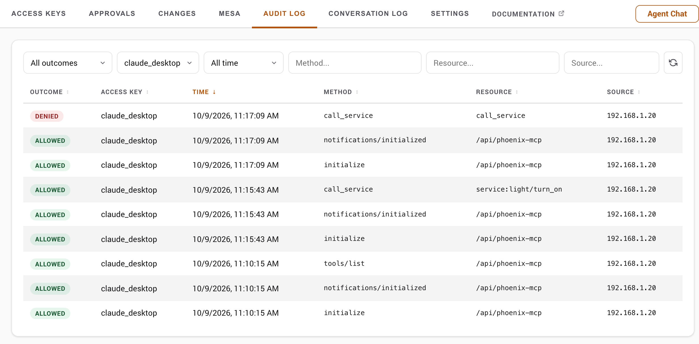
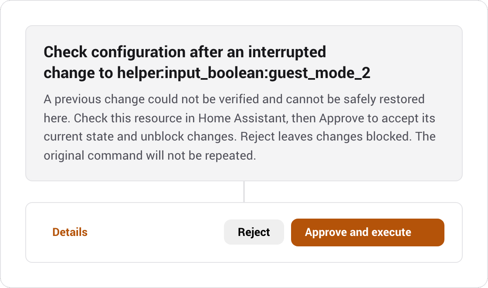
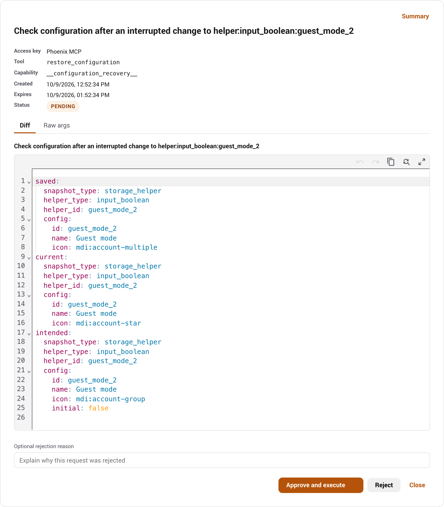

Operations
Monitor and maintain Phoenix MCP with rate limits, sensors, audit logs, configuration history, and Home Assistant events. See the separate Admin API reference for HTTP automation.
Rate limiting
Each access key limits MCP network traffic with a sliding one-minute window.
- Default
- 60 requests per minute, with a burst of 10 per second.
- Disable
- Set
rate_limit_requeststo0for that access key. - Pass-through
- Uses the same limits. Edit them on the access key detail page after creation.
- JSON-RPC batch
- Each call spends one request. Phoenix rejects the full batch with HTTP 429 before anything runs when it would exceed the limit.
- In-process AI
- Agent Chat, Assist, Voice Agent, and AI Task use the steps-before-check-in limit instead. Their tool calls remain audited and counted.
A blocked request returns HTTP 429 and Retry-After. Successful responses include the current limit state.
X-RateLimit-Limit: 60
X-RateLimit-Remaining: 47
X-RateLimit-Reset: 1712345678If Notify when a rate limit is reached is enabled in global settings, Home Assistant raises a persistent notification when an access key hits its limit, throttled to once per access key per minute.
Telemetry & sensors
Phoenix MCP creates six Home Assistant sensors for each active access key. New sensors for an access key named my_access_key use the phoenix_mcp_access_key_ prefix, as shown below. Home Assistant assigns the entity ID when a sensor is first created and resolves any collision by adding a suffix, so copy the real IDs from the device page rather than typing these. Already registered sensors keep their existing entity IDs, including the older phoenix_mcp_token_ prefix or any IDs you assigned yourself.
| Entity | Reports |
|---|---|
sensor.phoenix_mcp_access_key_my_access_key_denied_count | Requests blocked by permission rules |
sensor.phoenix_mcp_access_key_my_access_key_expires_in | Days until expiry; unknown when the access key has no expiry |
sensor.phoenix_mcp_access_key_my_access_key_last_access | Timestamp of the most recent request |
sensor.phoenix_mcp_access_key_my_access_key_rate_limit_hits | Times this access key has been rate limited |
sensor.phoenix_mcp_access_key_my_access_key_request_count | Total requests made with this access key |
sensor.phoenix_mcp_access_key_my_access_key_status | active in practice: sensors are removed the moment an access key is revoked or archived, and expiry archives the access key, so the expired / revoked values are only ever visible transiently. Automate on the phoenix_mcp_access_key_expired / phoenix_mcp_access_key_revoked events below instead |
These are diagnostic entities, and last-access timestamps are rounded to a minute. Diagnostic categorization does not restrict HA user access: users who can see these entities can see their descriptive access key names and telemetry. Use non-sensitive access key names when that matters.
Sensors are removed automatically when an access key is revoked. Renaming an access key changes the display name only; the entity IDs are fixed when the sensors are first created and a rename does not move them, so a dashboard card or automation referring to one keeps working. Phoenix MCP's own sensors are blocked from all access key access, so an external tool cannot read its telemetry through Phoenix MCP.
Global settings
Tool selection review
Tool selection review is an evaluation facility for Agent Chat, Voice Agent and AI Task. It is off by default and has no control in Settings; an administrator can turn it on through the settings API, and the choice persists across restarts.
In Observe only mode the selected Decision Provider sees the task and the announced tool catalog, and its recommendation is recorded. Nothing changes which tools run. Advise would let the conversational model reconsider one pending batch per turn, but it needs a qualified decision model and none is qualified yet, so it is unavailable. Permissions, MESA and approvals apply either way.
Review shares the decision timeout and hourly allowance, adds latency and model usage, and a disagreement is not evidence of a better choice. It never applies to Home Companion, the Assist bridge or external MCP clients. Aggregate review reasons appear in the command-routing preview diagnostics.
Command routing
Command routing handles simple commands before your usual AI provider is called. In Settings, turn on Handle voice commands directly (Voice Agent) or Handle chat commands directly (Agent Chat); both are off by default. Anything routing cannot handle goes to your usual provider with the conversation intact. AI Task and the Assist tool-provider bridge are unchanged.
Routing tries Home Assistant's local recognition first, using its sentence rules and the names and aliases exposed to Assist. For commands local recognition misses, you can add an optional account in the Decision Provider card, below LLM providers. If it declines, your usual provider handles the request, so a decision account adds time and possibly cost; it does not guarantee a faster or cheaper reply.
Routing applies only to Voice Agent and Agent Chat. External MCP clients such as Claude Desktop or Codex interpret their own prompts and call Phoenix tools directly, so their calls skip routing. The read-only recognize_intent tool shows how Home Assistant would recognize a phrase without running it. Home Companion also bypasses routing.
Voice follows the Assist conversation language and Chat follows the panel language. Which local sentences exist depends on Home Assistant's rules for that language. Non-English prompts have not been fully tested with JEV.
Routing statistics
Expand Routing statistics in Voice Agent or Agent Chat for that surface's totals since the displayed start time. The headline is the share of requests completed without a conversational-model call. It is a request percentage, not estimated token savings. Failed, cancelled and approval-queued replies do not count as direct completions, and a completed write means Home Assistant accepted the command, not that the device changed.
Token totals show reported input and output separately for decision and conversational requests; missing reports are labelled. Refresh reads the counters without a model call. Reset statistics asks for confirmation and clears only that card's totals. Aggregates hold no prompts, entity IDs or account IDs, survive restarts, and are cleared by a core data wipe. Voice and Chat are counted separately.
Supported commands and permissions
Local recognition handles on/off commands, numeric settings and primary-state questions about one named entity. Numeric coverage includes brightness, color temperature, media volume, fan speed, cover and valve position, climate and water-heater temperature, humidity, numbers and counters. The target must support the operation, and the value must fit its bounds and precision. Cover position means percentage open. Relative amounts and unit conversions go to your usual provider.
Installed Home Assistant sentences also cover media pause, resume, next, previous and mute, and vacuum start and return to base. Vacuum area cleaning and media search go to your usual provider.
If a command matches two to five eligible entities with the same name, Phoenix asks you to choose. Reply with the number or exact entity ID, or say cancel. The choice expires after two minutes and is used once. Choosing a target does not approve it; any required approval still appears separately.
An Assist satellite assigned to an area supplies that area when your command omits it, such as turn on the lights. An area you name wins. Browser location and typed chat supply none. Counts such as how many lights are on? are computed by Phoenix from fresh, authorized states, never by the model. They cover accessible, Assist-exposed entities, excluding aggregate, diagnostic and configuration entities, and unknown or unavailable states stay in the total.
Numeric commands can also name an entity ID, such as set light.office to 37 percent brightness, as long as the whole sentence matches an installed Home Assistant rule and the entity is exposed to Assist and within the key's scope.
Not run locally: custom sentence automations, contextual requests, unavailable or unregistered targets, aggregate entities, code-protected locks and alarms, and update installs. Historical summaries, forecasts, calendar contents and structured service arguments go to your usual provider.
Every routed command still passes Phoenix permissions, MESA and approvals. A denial, pending approval or uncertain result is never retried by the conversational provider. After a write, Phoenix briefly checks the state Home Assistant reports and says whether it matched or the command went out unconfirmed. That is not proof of the physical state, and Phoenix never resends because verification is missing. Check uncertain actions under Needs attention in the panel.
With a qualified JEV account, direct routing also covers switches and toggles, counters, timers, buttons, scenes and scripts, cover and valve movement, vacuum and lawn mower controls, code-free locks and alarm modes, media playback and source, fan presets, climate modes, select and text helpers, date and time values, light colors and effects, and current-attribute reads such as brightness or temperature. Each request names one eligible target. Coverage has not been live-tested for every entity, integration, model and language, so narrow fixture success is not evidence of full-home reliability.
Optional decision account
Turn Use decision provider off to use local recognition only, or add TypeSafe / JEV for hosted decision routing. Enter the API key, select Validate, choose a model, then select Done. The switch is off and disabled until an account exists. Saving the first account selects it and turns the switch on, without changing the Voice or Chat direct-command switches. With several accounts exactly one is the default; removing it passes the default to another account or leaves the switch off. Use the pencil to change the model, refresh to reload the catalog, and the trash icon to remove an account. Decision accounts cannot be used as conversational or AI Task providers. Validation checks that the model exists, not command accuracy.
Qualified models are jev-latest and jev-1.13.0. JEV chooses an operation and target only when it is at least 90 percent sure of every required choice. That is an admission rule, not measured accuracy. Malformed or uncertain decisions fall back to your usual provider before anything runs, and Phoenix does not repair or retry them. Numeric values must also pass Phoenix's own check of the requested absolute value against the device's bounds and step.
A decision request sends the command, the language, and the names, aliases, areas and operation metadata of eligible entities, not their current states. Mixed-history review also sends the conversation and a candidate action, which can include earlier Home Assistant state information. Requests containing detected secrets or inaccessible entities are not sent. Provider charges and data policy apply.
Targets must be registered, available, exposed to Assist and within the key's scope. Joint JEV routing supports up to 1,016 candidates and generic routing up to 392; provider limits can lower these. A catalog that does not fit goes to your usual provider and is never truncated.
Connection timing and diagnostics
Under Connection settings, Decision timeout (ms) accepts 250 to 30,000 (default 5000) and is shared by every check in one request. Local recognition has its own 500 ms default. A timeout falls back before anything runs, and decision calls are not retried.
Decision requests per hour caps decision API attempts across Voice, Chat and previews. The default 0 means unlimited. Each attempt uses one request even if it fails, and the count resets each UTC hour and survives restarts. Your conversational provider is billed separately; this is a request limit, not a spending cap.
For a short follow-up such as turn it off, Phoenix reviews the whole conversation first. Evidence of an earlier locally handled command expires after 30 minutes and on restart. Ambiguous, plural or relative references, and edited or unsupported history, go to your usual provider. Review never replaces permission or approval checks.
Command previews and observation controls are administrator diagnostics in the admin API, not the settings card. Previews never run commands or create approvals, and diagnostics keep aggregate counts rather than commands or decisions.
Other global settings
| Setting | Default | Effect |
|---|---|---|
| Audit log flush interval | 15 min | How often the in-memory log is snapshotted to disk; set to "Never" to disable periodic saves; lifecycle saves still run |
| Disable all logging | Off | Suppresses audit and conversation recording |
| Kill switch | Off | When enabled at startup, Phoenix MCP registers no client routes; enabling it at runtime makes the already-registered MCP, context, skill, and Agent Chat routes refuse with 503 (HA cannot unregister them). The Assist API stays registered with zero tools; Voice Agent and AI Task refuse work |
| Log allowed requests | On | Record successful requests |
| Log client IP | On | Include caller IP in audit entries |
| Log denied requests | On | Record blocked requests and unsupported MCP methods |
| Log entity IDs | On | Include entity IDs in audit entries |
| Log rate-limited requests | On | Record rate-limited requests |
| Maximum log entries | 10,000 | Capacity of the buffer and on-disk snapshot; reducing it trims the oldest entries immediately |
| Enforcement mode | Advisory | Per-entity safety enforcement: off, advisory, or enforced. See MESA |
| MESA in-context profile buttons | Off | Show experimental admin-only MESA profile controls on Home Assistant's entity, device, area, and integration pages |
| Notify when approval is needed | On | Raise an HA notification, with a deep link, when an action needs admin approval |
| Notify when a rate limit is reached | Off | Raise an HA notification when an access key is rate limited |
| Enable presets | Off | Lets each access key save and switch named snapshots of its full configuration; enabling seeds every access key with a preset of its current settings. See the panel guide |
| Agent Chat visibility | All Home Assistant pages | When off, the floating Agent Chat button appears only in the Phoenix MCP panel |
| Chat history limit | 100 lines | Number of prior chat transcript lines kept for the next model call; range 0-5,000 |
| Steps before check-in | 20 | Agent Chat tool rounds allowed before the turn pauses for Continue; range 3-100 |
| Assist Tool Provider access key | None | Active access key whose scoped tools the Assist integration exposes |
| Voice Agent | Off; access key, provider, and model unset | Registers Phoenix MCP as a Home Assistant conversation agent when fully configured |
| AI Task | Off; access key, provider, and model unset | Registers Phoenix MCP as a Home Assistant AI Task entity when fully configured |
| Theme | Auto | This changes how the panel looks for you and does not sync to other admins or devices |
System-log diagnostics
get_logs and get_phoenix_diagnostics read Home Assistant's in-memory system_log ring through MCP. This is a bounded diagnostic sample, not the Phoenix audit log above and not the raw home-assistant.log file. Home Assistant deduplicates repeated records into buckets and retains only warning-and-above records in this source.
Use the response's source envelope before interpreting an empty result. It distinguishes an available empty ring from an unavailable integration or a degraded upstream shape, and reports capacity, retained buckets, malformed buckets skipped, earliest and latest retained times, and the read timestamp. Continue a clipped query with next_cursor and exactly the same filters. Cursors are snapshot- and filter-bound, but continuation is best-effort because a live bucket can be updated and move while pages are being read.
Messages and exceptions default to compact previews with explicit truncation metadata; search still matches full scrubbed text. The serialized response byte budget can shorten a bucket page independently of limit, reported by payload.byte_limited. For a bounded detail chunk, pass the returned detail_ref to get_log_detail, select detail_field and optionally message_index, and continue with detail_offset=detail.next_offset until detail.has_more is false. A reference from get_phoenix_diagnostics also needs Diagnostics when it is used. A stale reference requires a fresh query. See the tool reference for the complete detail contract.
get_logs requires System log read and excludes Phoenix records. get_phoenix_diagnostics requires both System log read and Diagnostics, includes only Phoenix records, and applies stronger topology, path, identifier, and entity-scope redaction. After a deployment, verify these tools only through the connected Phoenix MCP client after Home Assistant has restarted.
list_integration_log_levels reports effective and stored integration-aware logger settings only for integration domains visible inside the access key's resource scope. set_integration_log_level additionally requires the separate, pass-through-exempt Integration log levels capability. Runtime-only timed changes survive Phoenix reloads, restore only while the Phoenix-applied setting remains current, and are discarded rather than reapplied after a full Home Assistant restart. A Phoenix core-data wipe first restores every still-matching timed change.
Logbook diagnostics
get_logbook reads Home Assistant's narrative event history through MCP and returns events chronologically. A home-wide query may cover at most 7 days. Supplying accessible entity IDs, device IDs, or one causal context ID raises that ceiling to 31 days; text search is post-retrieval and does not raise it. Entity and device filters may be combined, while a context filter must stand alone.
Read total and truncated before treating the reply as complete. total is the number left after permission filtering, response redaction, and optional search but before limit; when truncated, reduce the time window rather than looking for a cursor. Home Assistant's underlying logbook command returns one unpaginated database result, so Phoenix deliberately does not offer response-only continuation that would repeat the expensive query and imply a stable snapshot.
Configure advanced access key behavior
Advanced access key options
Three per-access-key options sit outside the capability matrix, in the panel's Tool Announcement card on the access key detail page (and settable through PATCH).
- Always announce all tools
- Off by default: an access key's
tools/listadvertises only the tools its capabilities unlock and hides the rest. Turn it on to advertise the full tool list regardless of gating. Calls are still gated, so this changes what a client sees, not what it can do. A stale-catalog warning asks external clients to refresh their tools without ending the conversation. Phoenix-owned surfaces load their tools from current settings each turn. Capability grants do not interrupt a waiting tool; a restrictive permission edit can withhold an affected result, which is reported as a tool refusal so the conversation can continue. Revocation and uncertain write outcomes retain their separate safeguards. - Inline approval wait
- Off by default. A confirm-gated call returns
pending_approvalas soon as the approval is queued, so a run of writes reaches the Approvals queue in seconds and you clear them individually or as a batch; the agent asks for the outcome when it needs one. Choosing a duration instead makes the call hold the response open until you decide, which suits a client that never asks, at the cost of the next approval not being created until the previous call stops waiting. This affects external MCP clients only. Agent Chat, the Assist bridge, the voice agent and AI Task ignore it: they queue immediately and wait their own way, so testing the setting in Agent Chat will show no difference. - Limit to Assist-exposed entities
- Pass-through access keys only, off by default. A pass-through access key normally sees every non-Phoenix entity; enable this to limit it to the entities exposed to Home Assistant Assist, for control as well as reads, as Assist itself is limited. An unexposed entity gets the same reply as one that does not exist, whether the agent reads it, names it in
call_serviceor a preview, reaches it through an area or device, or finds it in an automation, relationship or MESA listing. Scripts, automations, input helpers, locks, buttons, numbers and selects are not exposed by default; expose the ones the agent should use. An exposed script still runs whatever it contains, so exposing it is the real decision. For finer control, use a scoped access key. It is ignored for scoped access keys, which scope by the permission tree, so the toggle is disabled unless pass-through mode is on.
Conversation Log
The administrator-only Conversation Log shows what Phoenix received, attempted, changed and returned, newest first. An Agent Chat conversation expands to its retained turns, oldest first. Each turn shows the prompt, the assistant's narration interleaved with tool activity, any change evidence and the response. Home Companion, Assist and most external MCP calls are separate entries, because Phoenix has no reliable conversation boundary for them and may lack the original prompt or the client's final reply. Gaps are labelled, and calls are never grouped by access key, IP address or timing.
Each entry shows its source and, where known, the access key, provider and model. Status icons mark successes, pending steps and failures, and error messages stay visible without expanding. Raw data, long text, tool results and before/after configuration sit in disclosures, and large payloads are shortened with a notice. Technical details list the access_key_id, timestamps, coverage and outcomes. Bearer tokens and provider API keys are never collected. Search and the source, outcome and date filters help find entries, and the tab refreshes itself.

Tool calls and results share one operation, with delegated work nested under the call that started it. The log separates Assist recognition, decision-provider requests (including observation-only comparisons) and calls to the LLM provider. Expand Text checked to see the sanitized text sent to Assist or a decision provider. A finished model request does not prove a tool ran; tool results are recorded separately. Calls rejected by the provider parser or withheld by Home Companion's preflight checks show their name, sanitized arguments and refusal reason, marked not executed.

Recording is off by default; enable it in Settings under Conversation Log. The defaults keep up to 100 entries, seven days or 25 MB, whichever comes first, and all three limits are configurable. The oldest entries are removed whole. Each entry is capped at 1 MB or a quarter of the storage budget, whichever is smaller, and each payload at 64 KB. Past the event limit an entry shows an omitted-event count, and outcomes and approval decisions are still kept. History is saved every 30 seconds when changed and on shutdown, so an abrupt failure can lose recent activity. Turning recording off keeps existing history; Clear conversation history erases it.

Execution and response outcomes are separate: a change can succeed even if the final reply fails. Approvals link back to their entry. Changes use existing execution results and snapshots; recording makes no extra reads, and a sent command does not prove a physical effect. A Phoenix-generated reply does not prove delivery to the user.
Recognizable credentials and secret fields are removed before storage, including alarm and lock codes written near words like alarm, disarm or unlock; content that cannot be sanitized is omitted. Filtering cannot guarantee that free text holds no secrets. Images and attachments, system instructions, provider request envelopes and private reasoning are never recorded. Disable all logging takes precedence, and turning off entity-name logging omits conversation content. History is included in Home Assistant backups, and clearing the log does not touch existing backups or the audit and safety records. While recording is on, household members' Voice requests are recorded too, so tell them first.
Audit log
Phoenix MCP keeps a circular buffer of requests, viewable in the panel's audit tab or through the admin API. Each entry records a request ID (matching X-Phoenix-Request-ID), timestamp, access key ID and name, method, resource path, outcome, and source. After access key authentication, pre-dispatch protocol failures are recorded as invalid_request when denied-request logging is enabled; authentication failures have no access key audit entry. Every entry produced by one legacy JSON-RPC batch shares the batch's parent HTTP request ID. In the panel, Source shows the caller's IP address for network requests. Requests from Phoenix MCP's own surfaces appear as Agent Chat, Assist Tool Provider, Voice Agent, or AI Task. The admin API continues to expose the underlying value in client_ip.

| Outcome | Meaning |
|---|---|
| allowed | The request succeeded. |
| denied | Blocked by permission rules, the blocklist, or a RED / NO_ACCESS result. Includes permission-based 404s. |
| invalid_request | The request was structurally malformed and rejected before permission checks, for example a template with a syntax error. Also used when an authorised service call carried an argument the target service itself rejected, such as a value outside the range that service accepts: the validator's message is returned so the caller can correct it, which is safe because the call had already passed every permission check and the message describes the caller's own argument. Also used when a permitted action failed for an internal reason, such as a write that could not be saved: error logging uses either a traceback or a bounded phase/type/frame diagnostic, depending on the boundary; provider responses and credentials are not included. They are deliberately not recorded as denied, so that outcome stays a reliable list of what your permission rules actually stopped. |
| not_found | The entity is genuinely absent from both HA state and the registry. Identical to denied for the caller, but distinguished here so you can tell a missing entity from a permission wall. |
| not_implemented | The client called an MCP method Phoenix MCP does not support. A protocol gap, not a permission block; does not increment the denied counter. |
| rate_limited | The access key exceeded its rate limit. |
| pending_approval | A capability set to Confirm or an enforced MESA Confirm rule queued the action for admin review instead of running it. Recorded even when the per-outcome switches are off, unless Disable all logging is enabled. |
When logging is enabled, agent dispatch and authenticated transport failures are audited. Successful access key creation, edits, permission changes, rotation/revocation, presets, settings, approvals, provider-account actions, Voice pipeline changes, AI Task preferred selection and version restoration also record the acting HA administrator. Administrator reads and generic HA changes are not a complete audit of Home Assistant. Logging switches apply by outcome; pending approval records bypass the per-outcome switches but are suppressed by Disable all logging. Names and IP addresses depend on their logging settings, and unknown-method errors do not automatically count as denied actions.
MESA denials are recorded here too, alongside the request that caused them. A companion entry with a method of mesa:enforcement_decision (or mesa:privacy_access, or mesa:lease) names the entity and the rule that stopped it, so you can tell which of a call's targets was the problem. Note the request itself is only logged as denied when the safety layer stopped everything it targeted: a call over several entities where one is blocked and the rest run is an allowed request with a companion denial entry beside it, because that is what happened. Only denials are recorded: the safety layer also reports the accesses it allows, and logging those would push real request history out of the buffer. An entity marked confirm is not a denial either way, so it files no entry; under advisory it runs with a warning, and under enforced it becomes an approval with a record of its own. A preview through dry_run_service never files one, since a predicted block is not a block.
These entries depend on the MESA audit logger
The safety layer reports its decisions at INFO on the mesa_core.audit logger. The bundled library sets that logger to INFO itself, so Home Assistant's default WARNING level does not hide these events: they are recorded here, and each one also appears as an INFO line in home-assistant.log. Phoenix MCP does not change the logger's level. A logger override that raises mesa_core.audit to WARNING suppresses them; see MESA logging guidance. The blocks still happen; only the record of them is lost, and an empty MESA history then looks identical to a safety layer that stopped nothing.
If your configuration overrides that logger, set it back to info; the rest of your logging can stay at WARNING:
logger:
default: warning
logs:
mesa_core.audit: infoThe log is stored in .storage/phoenix_mcp_audit and survives restarts. It is included in HA full backups and in partial backups of .storage. Phoenix MCP flushes on the configured interval and also on HA stop, reload, and unload. "Never" disables the periodic flush; stop, reload and unload still attempt a final save. Abrupt process loss, storage failure or work finishing after the final stop save can lose the latest rows.
Configuration history
Supported configuration writes append best-effort before/after snapshots, viewable in the panel's Changes tab or through the admin API (which also documents the few snapshots that deliberately refuse to restore). The most recent twenty versions per resource are kept, oldest evicted first, so history stays bounded without a sweep. A file or YAML snapshot larger than 100 KB is kept as a metadata-only marker and cannot be restored inline, limiting the payload retained for that version. There is no aggregate byte budget across resources. Snapshots are stored in .storage/phoenix_mcp_versions and survive restarts; the file is included in HA backups like the rest of .storage. The store is admin-only; restoring a version re-applies it and records a new rollback entry, so the history stays append-only.
Configuration recovery
Recovery records can retain separate before, intended and readback snapshots, each up to 1 MiB. At the 256-record limit, those three fields alone can approach 768 MiB, before observations and storage overhead. This is separate from the smaller ordinary version history and has no aggregate byte budget. Phase updates save a small index without rewriting unchanged snapshots. Identical snapshots share storage, but different before, intended and readback copies can still multiply retained size. Snapshot validation and serialization run outside the event loop, but large batches can still consume substantial memory, storage and I/O. Use small scoped changes and review resolved safety copies before removing them.
Phoenix automatically checks interrupted protected configuration changes at startup and periodically. If the current configuration matches the saved intended state, it clears the write block without repeating the command. Cases that still need a decision appear in Approvals, using the usual notification and review flow. Open Details to compare current and saved configuration. For a supported restore, Approve restores the displayed saved configuration and Reject keeps the reviewed current configuration. If safe restoration is unavailable, the Summary asks you to check the resource in Home Assistant before approving acknowledgment; rejecting that request leaves changes blocked. A timeout does not establish that nothing changed. Cancelled, expired or failed requests leave unresolved changes blocked and may produce a fresh request.


Qualified UI-created Template helpers keep their saved entity ID and custom name when recreated, with a new config-entry ID. Recovery requires the same HA version, a compatible single-entity mapping and an unoccupied saved ID. Saved Template expressions must satisfy the helper reference rules; nonempty actions and device associations refuse restoration. Unsupported Template mappings, disabled-entity recreation and incomplete legacy snapshots refuse automatic restoration. Person recovery does not retain private user or picture bindings. Generic integrations, device removal and firmware/radio effects have no general automatic inverse. Restoring dashboard registry metadata does not recover a deleted layout; use its separate layout snapshot when available.
Safety records use the separate private .storage/phoenix_mcp_config_recovery index and its phoenix_mcp_config_recovery.snapshot.* files. Keep the index and snapshot files together in backups; do not manually remove individual files. Existing inline copies migrate on the next successful protected write. Safety records survive ordinary history rotation and core data wipe. Up to 256 records are retained, with a 1 MiB limit per snapshot. Resolved copies rotate automatically after 30 days, with up to twenty per resource and 256 total. Active and unresolved records are never evicted. Storage filled by unresolved work, unreadable storage or unwritable storage blocks protected writes. Snapshots that the secret scrubber would alter are refused rather than saved with unusable placeholders. Arbitrary configuration prose can still contain sensitive information. The record list remains admin-only; the MCP restore tool accepts only records owned by its access key and checks current authority.
A restart timeout or disconnected client does not mean restart failed. Do not replay it automatically. Phoenix automatically compares its current runtime identity with the saved pre-restart identity. A fresh client can also compare get_config.runtime_identity. A different identity establishes a replaced HA runtime, not proof that a particular request caused it. A Phoenix integration reload alone does not change that identity. Recovery is not a full Home Assistant backup.
Automate with Home Assistant events
HA events
Access-key lifecycle event data includes access_key_id, access_key_name, and timestamp. Revocation and rotation events also include the HA user ID of the admin who acted. phoenix_mcp_config_changed instead carries resource_type, resource_id, and action.
| Event | Fired when |
|---|---|
phoenix_mcp_approval_claimed | An approval's saved action starts executing (claimed: true), or its execution claim is released (claimed: false); the final record may be approved, failed, cancelled or still pending |
phoenix_mcp_approval_resolved | An approval resolves as approved, rejected, failed, expired or cancelled; approval alone does not establish execution success |
phoenix_mcp_config_changed | A configuration version is recorded (agent create/edit/delete, or an admin rollback); drives the panel's live Changes feed |
phoenix_mcp_rate_limited | An access key exceeds its rate limit. The event and optional persistent notification are throttled to at most once per access key per minute; each refusal can still produce an audit row when rate-limit logging is enabled |
phoenix_mcp_access_key_expired | An access key's expiry passes. A timer scheduled at creation fires it on time (with a periodic sweep and an on-access check as backstops), so it does not wait for the access key to be used |
phoenix_mcp_access_key_revoked | An access key is revoked |
phoenix_mcp_access_key_rotated | An access key's raw value is rotated |
phoenix_mcp_approval_requested | A new action is queued for human review |
phoenix_mcp_mesa_lease_expired | A MESA lease ends, with its reason; expiry, release, preemption and access key cleanup are distinct |
phoenix_mcp_mesa_blocked | MESA refuses a control or registry operation; carries access key identity, entity ID, applied rule and timestamp. Camera privacy refusals do not emit this event |
Inspect HTTP routes and protocol versions
Route reference
Admin API
The admin routes (access keys, permissions, approvals, MESA profiles, entity hints, settings, and the rest) now have their own Admin API reference, complete with payload schemas. They require a Home Assistant session and the admin role.
MCP and skill routes
Legacy batches that exceed the request-count capacity or burst capacity are rejected with HTTP 400 before dispatch. A batch within those capacities but exceeding the remaining rate-limit window returns HTTP 429 and Retry-After, with no item dispatched. Modern requests do not support batches.
POST /api/phoenix-mcp MCP Streamable HTTP endpoint
DELETE /api/phoenix-mcp Terminate an access-key-owned legacy session
GET /api/phoenix-mcp/context Access key context summary
GET /api/phoenix-mcp/skill Agent skill guide- Authentication
Authorization: Bearer phx_...is required for the MCP and context routes. Access keys in a URL or query parameter are rejected. The skill route is unauthenticated.- Modern MCP headers
MCP-Protocol-Version: 2026-07-28andMcp-Methodmust match the request metadata and JSON-RPC method. Named methods also requireMcp-Namematching the requested tool name, resource URI, or prompt name.- Legacy session header
- A 2025-03-26 client sends the
Mcp-Session-Idreturned byinitializeon later requests. - Response framing
- Include
Accept: text/event-streamto receive the single JSON-RPC response as an SSE event with keepalives. A client asking only for JSON receivesapplication/json.
The MCP endpoint answers a client that advertises text/event-stream with the same single JSON-RPC response delivered as one SSE event, plus a keepalive frame every 15 seconds while the request is still running. Conforming clients for the supported protocol revisions advertise both SSE and JSON; custom JSON-only callers keep the plain response path. That matters behind a reverse proxy: a call held by an inline confirm wait can otherwise sit silent for up to three minutes and get dropped. For modern 2026-07-28 requests, closing the response stream attempts to cancel unfinished server work; already dispatched HA work may still complete. Legacy 2025-03-26 requests can continue after a disconnect. notifications/cancelled is accepted and ignored; it does not cancel a stored server operation or undo started work. Disconnect handling cannot roll back an HA service already dispatched.
The JSON context summary, phx://server-info, get_capability_summary, and get_audit_summary identify the caller with access_key_name. This replaces token_name in those responses. LLM usage fields such as input_tokens and output_tokens keep their names.
Phoenix MCP supports two protocol eras on the same endpoint. A modern 2026-07-28 request carries its protocol version and client capabilities in per-request metadata, uses no session, and keeps no resumable SSE event queue. Modern clients may POST only JSON-RPC requests and notifications; a client-sent response object is rejected as an invalid request. A legacy 2025-03-26 client starts with initialize, receives an Mcp-Session-Id, sends notifications/initialized, and includes that session ID on later requests. The server retains at most 256 legacy sessions globally and 8 per access key, with a one-hour inactivity expiry; integration reload clears them. Quota exhaustion returns HTTP 429 with Retry-After: 3600, without evicting active work. That delay reflects the inactivity lifetime, not a reserved future slot; activity can extend existing sessions. Reuse the session across requests and send authenticated DELETE /api/phoenix-mcp with its Mcp-Session-Id when disconnecting; a successful DELETE returns HTTP 204 and immediately frees its quota slot. Missing session information returns 400; expired, unknown and other-access-key session IDs return the same 404. An unknown or expired legacy session returns HTTP 404 so the client can initialize again. Every request in both eras still carries and revalidates its Phoenix bearer token. server/discover reports both implemented revisions, the server identity, and the access-key-aware primer. A legacy unknown method returns HTTP 200 with JSON-RPC -32601; the modern era uses HTTP 404 with that code. Legacy missing resources use -32002; unknown tools and bad method arguments use -32602. Modern missing-resource arguments use -32602; an unsupported protocol version uses -32022 with the requested and supported versions. Authority loss uses application error 1001 in the modern era and -32000 in the legacy era. Tool policy refusals are ordinary tool results with isError, rather than transport failures.
There is also an unauthenticated skill route
GET /api/phoenix-mcp/skill serves the agent skill guide with no access key. It is generic and contains no access key or entity data. See the agent skill.